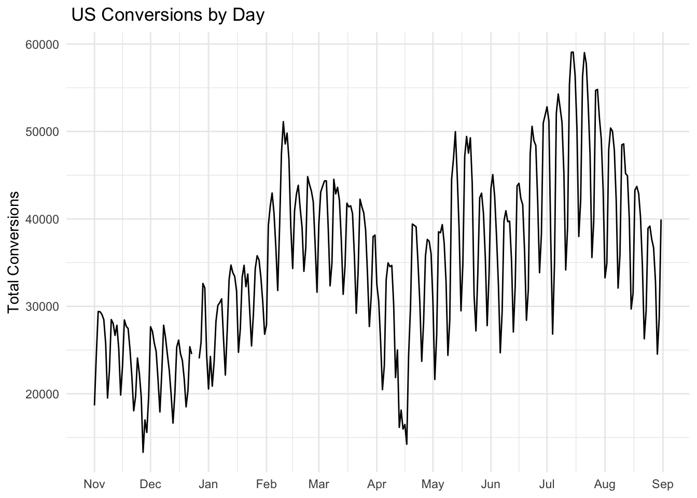
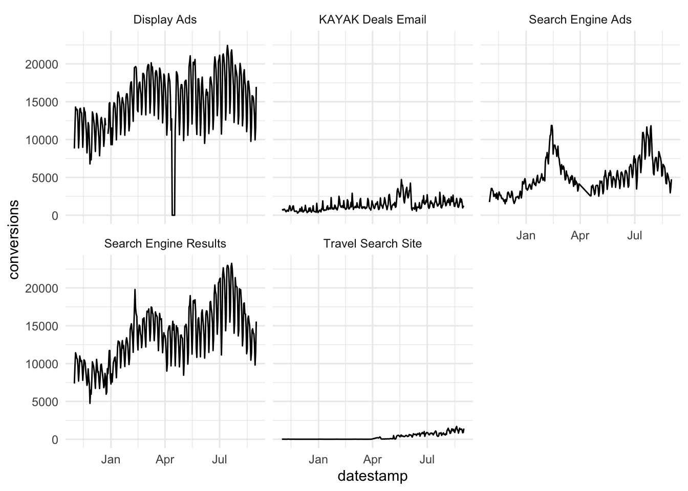
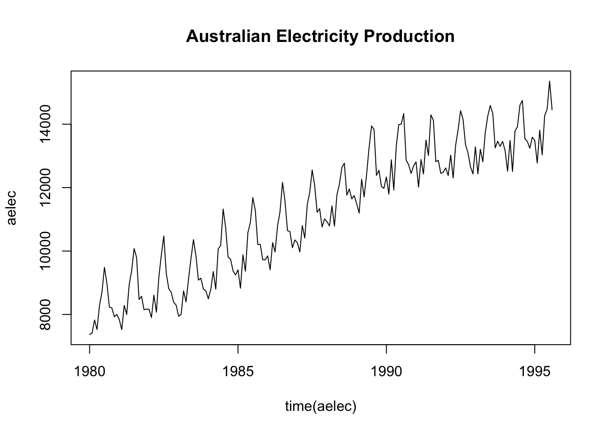
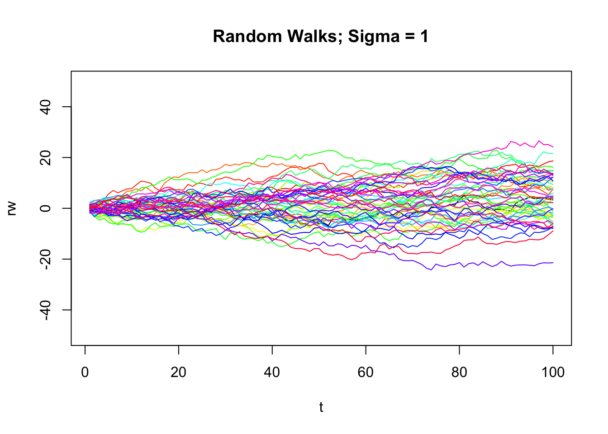
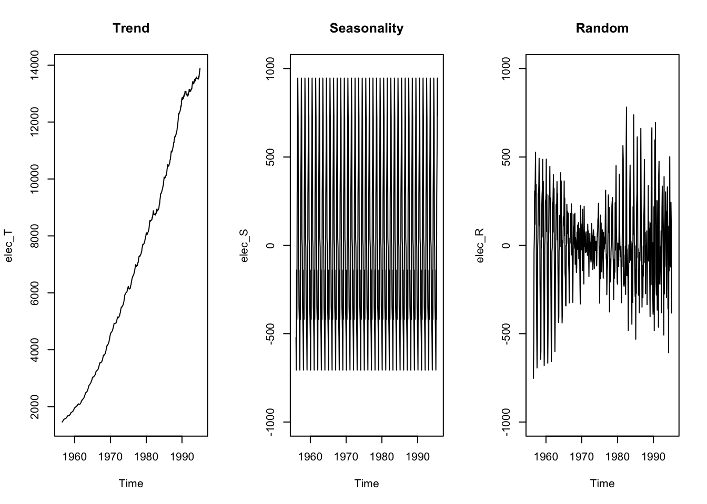

Set 2 Exploratory Analysis of Time Series Data
2.1 Time Series Data
A time series is an ordered sequence of observations, where the ordering is through time.
Time series data creates unique problems for statistical modeling and inference.
- Traditional inference assumes that observations (data) are independent and identically distributed. Adjacent data points in time series data are not necessarily independent (uncorrelated).
- Most time series models aim to exploit such dependence. For instance, yesterday’s demand of a product may tell us something about today’s demand of a product.
There are several different ways to represent time series data in R.
We will use the
tidyversefamily of packages extensively in this class. This package includes thelubridatepackage, which includes functions to work with date-times.Two of the most common ways to represent time series data are using data frames in which one of the variables is a time object (such as POSIXct or Date) or using a time series object.
2.2 Time Series EDA
The first thing to do in any data analysis is exploratory data analysis (EDA). Graphs enable many features of the data to be visualized, including patterns, unusual observations, changes over time, and relationships between variables. The features that are seen in plots of the data can then be incorporated into statistical models.
R has several systems for making graphs. We will primarily use ggplot2, which is among the set of tidyverse packages and is one of the most versatile systems for plotting. We will use a data set from Kayak to motivate our analysis.
conversions = read.csv("data/conversions.csv")
#read.csv("https://raw.githubusercontent.com/dbreynol/DS809/main/data/conversions.csv")
knitr::kable(head(conversions))| datestamp | country_code | marketing_channel | conversions |
|---|---|---|---|
| 2014-11-01 | be | Display Ads | 1174 |
| 2014-11-01 | be | KAYAK Deals Email | 57 |
| 2014-11-01 | be | Search Engine Ads | 1122 |
| 2014-11-01 | be | Search Engine Results | 976 |
| 2014-11-01 | fi | Display Ads | 12 |
| 2014-11-01 | fi | Search Engine Results | 2 |
This dataset contains information on the total number of daily conversions by country and marketing channel. Let us focus our analysis on the US and first visualize the number of conversions by day.

This plot contains a lot of useful information. To gain insight into how conversions depend on marketing channel, we can use facets. Facets are subplots that display a time series for each marketing channel.

Display ads and search engine ads are the dominant marketing channels. Both have a regular pattern that is likely a function of the day of week, with a higher number of conversions during weekdays as compared with weekends. We can explore this feature by aggregating over each weekday and visualizing how the distribution of conversions changes by day.

Clearly, there are significant changes in the mean level of conversions across the week. This is a form of seasonality. It may be useful to see what the data look like when this weekday effect is removed. To do so, we could visualize the residuals from the following linear regression model:
\[\begin{align} \hat{\text{conversions}} = \hat{\beta}_0 + \sum_{j=2}^7 \bigg( \hat{\beta}_j \times 1(\text{weekday = j}) \bigg), \end{align}\]
where \(j\) indexes the day of week. The residuals from this model consist of each observation minus the mean for that particular weekday.

This allows us to more clearly see the trend across the date range, removing the effect of the weekly pattern.
2.3 Classical Regression
Given that regression is already in our tool kit, we will use it as our first method to model a time series. Let us assume that we have some output or dependent time series, say, \(x_t\) , for \(t = 1, \ldots,n\), that is being influenced by a collection of possible inputs, say, \(z_{t1}, z_{t2}, \ldots, z_{tq}\), where we regard the inputs as fixed and known.
We will look at monthly Australian electricity production (the fma::elec dataframe). The data is shown below.

Let us fit two models to this data, one where we use time as the independent variable. This estimates a linear trend. In the other, we will try to capture some of the obvious seasonality in the data.
\[\begin{align} y_t &= \beta_0 + \beta_1 t + w_t \\ y_t &= \beta_0 + \beta_1 t + \beta_2 \times ({2\pi \cos(t)}) + w_t \end{align}\]
The fits from these two models are shown below.

Clearly, model 2 offers a superior fit as compared with model 1. In fact, this model explains about 95% of the variation in electricity production. To check the validity of the model, let us examine the residuals across the range of time, \(t\).

One of the assumptions of the linear regression model is that the errors are independent and identically distributed. That is, for the model,
\[\begin{align} y = X \beta + \epsilon, \end{align}\]
The error vector, \(\epsilon \sim N(0, \sigma^2)\), consists of independent and identically distributed random variables. This implies that there is no correlation structure to the residuals. One way to check that this is true is to check for the absence of correlation in the observed residuals. What does the figure above indicate about the validity of this assumption for model 2?
2.4 Noise Processes
What if we re-arrange the model we fit above into a deterministic part and a random part:
\[\begin{align} y_t - x_t \beta = w_t \end{align}\]
What can we say about the right hand side? Since it is a random variable that is indexed by time, we can consider this our first and simplest time series model.
2.4.1 White noise
Let \(w_t\) be a random variable indexed by time, \(t \in [1,T]\).
The following properties characterize white noise:
\[\begin{align} E(w_t) &= 0 \\ Var(w_t) &= \sigma^2 \\ Cov(w_t, w_s) &= 0 \text{ } \forall t,s \end{align}\]
Note that Gaussian white noise is a special case where \(w_t \sim N(o, \sigma^2)\). White noise can come in different flavors. In the right hand plot below, \(w_t = 2e_t - 1\), where \(e_t \sim \text{Bernoulli(.5)}\). In the left plot, \(w_t \sim N(0,2)\).
2.4.2 Random Walk
Let us consider another simple model to describe time series data,
\(y_t = y_{t-1}+w_t\),
where \(w_t \sim N(0, \sigma^2)\) and all elements of the error vector are mutually independent.
Let’s derive some important properties of this model:
- What is the mean, \(E(y_t)\)?
- What is the variance, \(Var(y_t)\)?

2.5 Measures of Dependence
2.5.1 Autocovariance
In all but the simplest models, there is dependence between adjacent values \(x_s\) and \(x_t\). This can be assessed using the notions of covariance and correlation. The autocovariance function is defined as the second moment product:
\[\begin{align} \gamma(s,t) &= \text{cov}(x_s, x_t) \\ &= E((x_s - \mu_s) (x_t - \mu_t)) \end{align}\]
The autocovariance measures the linear dependence between two points on the same series observed at different times. Very smooth series exhibit autocovariance functions that stay large even when the \(t\) and \(s\) are far apart, whereas choppy series tend to have autocovariance functions that are nearly zero for large separations.
2.6 Stationarity
A (weakly) stationary time series \(x_t\) is a process such that,
- The mean is constant: \(E(X_t) = \mu\).
- The autocovariance function, \(\gamma(s,t)\) depends on \(s\) and \(t\) only through their difference, \(|s-t|\).
Therefore, we can write the autocovariance function of a stationary time series as,
\[\begin{align} \gamma(h) &= \text{cov}(x_{t+h}, x_{t}) \\ &= E((x_{t+h} - \mu) (x_{t} - \mu)) \end{align}\]
And, similarly, the autocorrelation function of a stationary time series can be written,
\[\begin{align} \rho(h) &= \frac{\gamma(t+h,t)}{\sqrt{\gamma(t+h,t+h) \gamma(t,t)}} \\ &= \frac{\gamma(h)}{\gamma(0)} \end{align}\]
2.7 Estimation
Although the theoretical mean, autocovariance, and autocorrelation functions are useful for describing the properties of certain hypothesized models, we also need to estimate these quantities using sampled data.
2.7.1 Mean
If a time series is stationary, the mean function is constant so that we can estimate it by the sample mean,
\[\begin{align} \hat{\mu} = \frac{1}{T} \sum_{t=1}^T x_t \end{align}\]
What is the variance of the mean in a stationary time series context?
2.7.2 Autocovariance
The sample autocovariance, \(\hat{\gamma}\), for a time series \(x\) at lag \(k\) is:
\[\begin{align} \hat{\gamma}_k &= \text{cov}(x_t, x_{t-k}) \\ &= \frac{1}{T} \sum_{t = k + 1}^{T} (x_t - \bar{x})(x_{t-k} - \bar{x}) \end{align}\]
2.7.3 Autocorrelation
The sample autocorrelation function for lag \(k\), \(\hat{\rho}_k\), is simply the lag \(k\) autocovariance, \(\hat{\gamma_k}\), scaled by the sample variance.
\[\begin{align} \hat{\rho}_k &= \frac{ \hat{\gamma_k} }{\hat{\sigma}_{y_t} \hat{\sigma}_{y_{t-k}}} \\ &= \frac{ \hat{\gamma_k} }{\hat{\gamma_0}}. \end{align}\]
2.8 Lab 1
- Join the Kayak visits data (see below) to the conversions data from Time Series EDA. Use the
inner_joinfunction with the argument,by = c(“datestamp”, “country_code”, “marketing_channel”)and then filter to only US observations. Make a plot ofuser_visitsandconversionsby day. Standardize them if it makes sense. Then, fit a linear regression model withconversionsas the response variable anduser_visitsas the explanatory variable. What is the estimated line equation? Finally, make a plot of the residuals from this model. Do the residuals validate standard linear regression model assumptions?
visits = read.csv("https://raw.githubusercontent.com/dbreynol/DS809/main/data/visits.csv")
visits$datestamp = ymd(visits$datestamp)df = inner_join(visits, conversions, by = c("datestamp", "country_code", "marketing_channel")) %>%
filter(country_code == "us") %>%
drop_na() %>%
group_by(datestamp) %>%
summarise(visits = sum(user_visits), conv = sum(conversions))
conv_lm = lm(conv ~ visits, data = df) # conversions = 2752.13 + .31 * visits
df %>% mutate(std_visits = (visits - mean(visits))/sd(visits), std_conv = (conv - mean(conv))/sd(conv)) %>%
select(datestamp, std_visits, std_conv) %>%
pivot_longer(-datestamp) %>%
ggplot(aes(datestamp, value)) +
geom_line(aes(color = name)) +
theme_minimal() +
ggtitle("Standardized Visits and Conversions")- Smoothing a time series offers a way of visualizing the underlying trend of a process, which can often be obscured by seasonal as well as random fluctuations. One relatively simple method of smoothing a time series is by computing a moving average. For a time series \(y_t\), \(t = 1, \ldots, T\), a moving average of order \(m\) can be written,
\[\begin{align}
\hat{y_t} = \frac{1}{m} \sum_{j=-k}^{k} y_{t+j},
\end{align}\]
where \(m=2k+1\). The concept behind this technique is that observations that are close in time are likely to be close in value. Compute a moving average of order \(m=13\) for the
fma::elecdataframe used in Classical Regression. Plot the smoothed series along with the raw data in a single plot.
- Time series data can exhibit a variety of patterns, and it is often helpful to decompose a time series into components, each representing an underlying pattern category. In this question, you will decompose a time series into three parts: a trend component (\(T\)), a seasonality component (\(S\)), and a random component (\(R\)). That is, for each observation \(Y_t\), we want to break it down into three parts:
\[Y_T = T_t + S_t + R_t\]
You will again use the fma::elec dataframe and proceed in 3 steps:
Step 1: Compute the trend component using an order 13 moving average (good news: you did exactly this in the last question, so use the output from the prior question as the trend component, \(\hat{T}\)).
Step 2: Compute the detrended series: \(Y-\hat{T}\)
Step 3: To estimate the seasonal component for each month, simply average the detrended values for each month. For example, the seasonal component for March is the average of all the detrended March values in the data. Then adjust the seasonal component values to ensure that they add to zero. The seasonal component is obtained by stringing together these monthly values, and then replicating the sequence for each year of data. This gives \(\hat{S}\).
Step 4: The remainder component is calculated by subtracting the estimated seasonal and trend-cycle components. That is \(\hat{R} = Y - \hat{T} - \hat{S}\).
Provide your code that is clearly commented for each step as well as a plot that shows each of the three component series in three separate plots (hint: use par(mfrow = c(1,3)) to make three plots in a row).
detrend = fma::elec - elec_T
monthly_means = tapply(detrend, cycle(detrend), function(x) mean(x, na.rm = T))
elec_S = ts ( rep(monthly_means, length.out = length(fma::elec)), start = c(1956,1), frequency = 12)
elec_R = ts ( detrend - elec_S, start = c(1956,1), frequency = 12)
par(mfrow = c(1,3))
plot(elec_T, main = "Trend")
plot(elec_S, ylim = c(-1000,1000), main = "Seasonality")
plot(elec_R, ylim = c(-1000,1000), main = "Random")
- See chapter 1 of TSA (page 30) for a definition of cross correlation. This is a measure of the linear dependence of one time series on another. In other words, this is a multivariate version of the autocorrelation. Compute the cross correlation between GDP per capita and the Case Shiller Home Price Index (both from the FRED database), using the following data:
fred = read.csv("https://raw.githubusercontent.com/dbreynol/DS809/main/data/fred_dat.csv")[,-1]
fred$date = ymd(fred$date)Provide your code that computes the ccf for lag 0 and 1:10 in both directions (i.e., one where GDP/capita leads and the other in which the Case Shiller leads). Validate your calculations using the ccf function.
From the text, we aim to compute: \[\begin{align} \hat{\gamma}_{xy}(h) = n^{-1} \sum_{t=1}^{n-h} (x_{t+h}-\bar{x})(y_t - \bar{y}) \end{align}\]
x = fred$gdp
y = fred$shiller
xbar = mean(x)
ybar = mean(y)
n = length(x)
den = sqrt( sum( (x - xbar) ^ 2 ) * sum( (y - ybar) ^2 ))
h = 2
# compute ccf for a given value of h
my_ccf = sapply( -10:10 , function(hi) {
if(hi < 0) {
x = lag(x, abs(hi))
} else if(hi > 0) {
y = lag(y, hi) }
sum( (x - xbar) * (y - ybar) , na.rm = T ) / den
})
names(my_ccf) = -10:10
print(round(my_ccf, 3))## -10 -9 -8 -7 -6 -5 -4 -3 -2 -1 0 1 2
## 0.460 0.502 0.554 0.617 0.668 0.717 0.771 0.821 0.864 0.906 0.951 0.884 0.817
## 3 4 5 6 7 8 9 10
## 0.755 0.687 0.609 0.528 0.457 0.393 0.333 0.279
##
## Autocorrelations of series 'X', by lag
##
## -10 -9 -8 -7 -6 -5 -4 -3 -2 -1 0 1 2
## 0.460 0.502 0.554 0.617 0.668 0.717 0.771 0.821 0.864 0.906 0.951 0.884 0.817
## 3 4 5 6 7 8 9 10
## 0.755 0.687 0.609 0.528 0.457 0.393 0.333 0.279- Write a function in R that takes two arguments: a time series (\(y\)) vector and a vector (\(k\)) specifying a set of lags. The output for this function is the autocorrelation of \(y\) for each lag in \(k\), using the formula in Autocorrelation. Compare the output of your function to the output from
(acf(y)).
# simulated data to test function
y = arima.sim(n = 10, model = list(ar = c(.1,.2)))
acf_fun = function(y, k) {
mean_y = mean(y)
gamma_0 = sum((y - mean_y) ^ 2)
# compute autocovariance for each lag in k
sapply(k, function(ki) {
v1 = as.numeric(window(y, end = length(y) - ki)) # ends 'early'
v2 = as.numeric(window(y, start = ki + 1)) # starts 'late'
gamma_k = sum((v1 - mean_y) * (v2 - mean_y))
return(gamma_k / gamma_0)
})
}
print ( acf_fun(y,c(1:5)) )## [1] -0.02955049 0.07644815 -0.10432208 0.22030633 -0.27448442## [1] -0.02955049 0.07644815 -0.10432208 0.22030633 -0.27448442- Simulate data from the following model: \(x_t = a + \phi x_{t-1} + w_t\), in which \(w_t \sim N(0,\sigma^2)\). You can choose the value for parameters: \(\phi, \sigma^2, a\). Report which values you chose and make a plot of the theoretical versus observed autocorrelation function for a simulation with length \(T=100\) and a simulation with length \(T=10,000\).